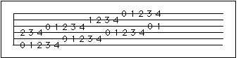
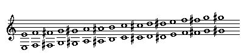
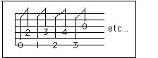
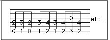

7. Chromatic Octaves


I first remember seeing these in the back of Segovia's booklet of slur exercises. It is a fundamental exercise for finger independence.
1. Keep the left hand still. The fingers should reach to where they are going without changing the angle of the hand.
2. Make sure the left hand thumb is not squeezing too hard. This is a great exercise to do >without< the thumb on the back of the neck.
3. Move the fingers in pairs so that they both arrive at their destinations at the same time. Break down the motion: pick up the fingers from the just-played octave together, move them simultaneously to over where they will be placed next, then lower them onto the next octave together.
4. Play legato, that is, there should be no discontinuity of sound. Do not pick up the previous octave until the next octave fingers are placed, and you play the next octave exactly when the fingers are in place.
Other patterns:

Think of it as two voices. The notes are held until the next note in the same voice. For example, when the first finger plays the F on the sixth string, it is first heard against the second finger's E on the fourth string.

Play these as triplets. The fingers playing the first octave of each triplet may be kept down while the second octave is being played so that they are already in position to be played as the third octave of the triplet.